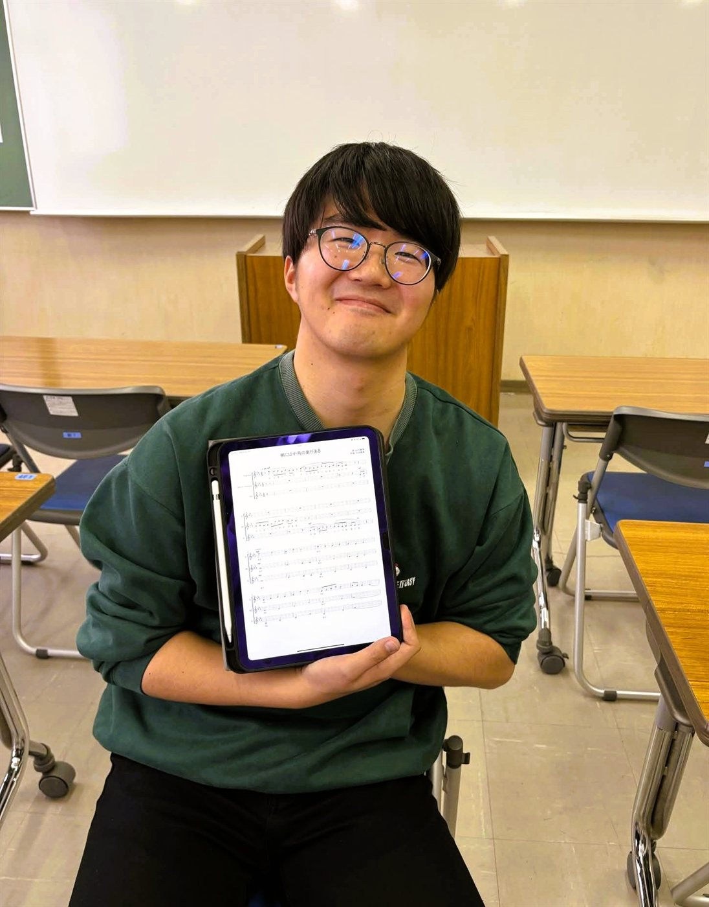
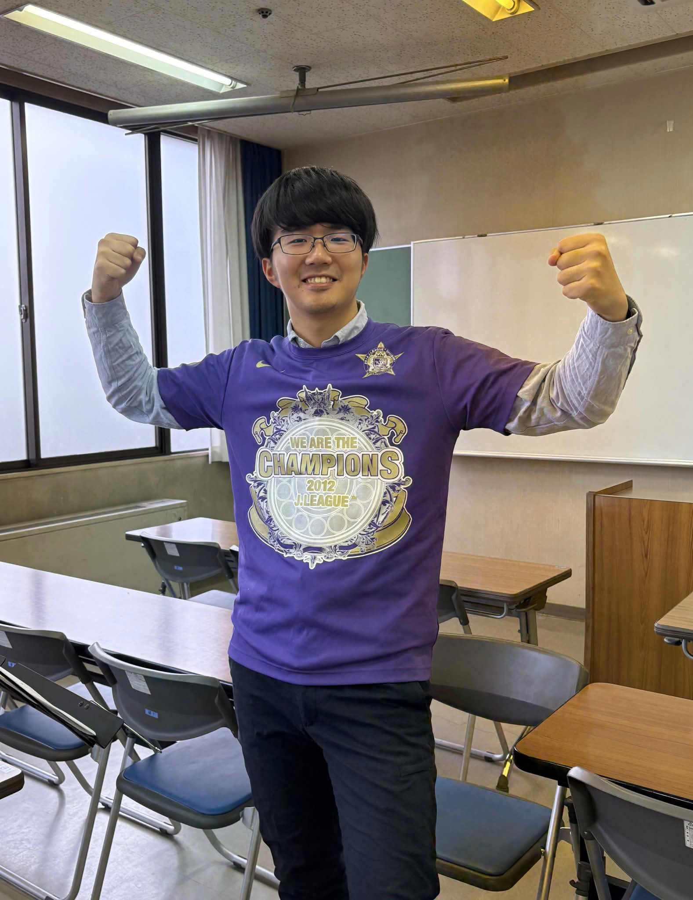

Yuki Amao
創設者 / 主宰 / 常任指揮者
繊細な響きと、じんわりと胸を打つ女声合唱の魅力にとりつかれ、合唱団たまのわを設立。以来、代表兼指揮者として団の活動を引っ張っています。
広島市立基町高等学校卒業。広島大学教育学部数理系コース卒業。高校時代から合唱を始め、広島大学在学中には広島大学東雲混声合唱団パストラールの正指揮者を務めた。また、基町高校合唱部の外部指揮者として全国総合文化祭出場に導く。
現在は合唱団たまのわ主宰・指揮者、合唱団ぽっきり団員。合唱指揮を松原千振氏に、作曲を吉清彩香氏に師事。
見学・体験練習は随時受け付けています。
お問い合わせ・見学申込